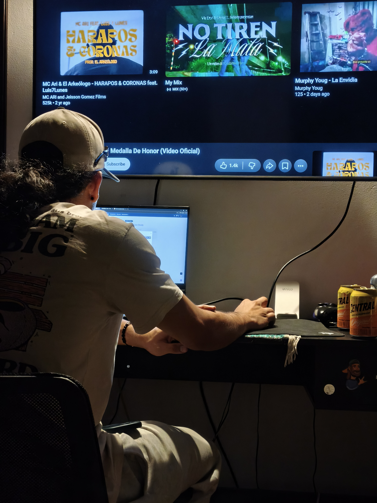

Desarrollo Web
Rueda Libre
Proyecto web enfocado en estructura semántica, diseño visual limpio y experiencia de usuario fluida en el navegador.
HTML5
CSS3
Git
Construyo interfaces web interactivas con JavaScript e integro soluciones de Inteligencia Artificial.
Ver mis proyectos
Soy un desarrollador en formación constante, apasionado por unir el diseño de interfaces modernas con el poder de la Inteligencia Artificial.
Me enfoco en escribir código limpio en JavaScript y crear aplicaciones web intuitivas que resuelvan problemas reales para los usuarios.
Frontend
Inteligencia Artificial
Algunos de los trabajos y prácticas que he construido en mi camino como desarrollador.
Proyecto web enfocado en estructura semántica, diseño visual limpio y experiencia de usuario fluida en el navegador.
Plataforma web para ejecutar videojuegos clásicos y de PlayStation 1 directamente en el navegador, integrando Inteligencia Artificial para asistir durante las partidas.
Colección de algoritmos y resolución de problemas prácticos utilizando estructuras de control y JavaScript moderno.